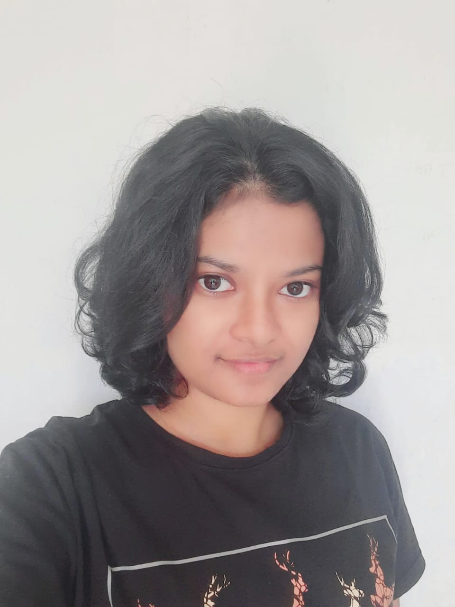

Disumi Pathirana

No.7c3 . Jinna Road . Issadeen Town . Matara . Sri Lanka . disumipathi01@gmail.com . LinkedIn:www.linkedin.com/in/disumi-pathirana-a15420232 . Hacker Rank: https://www.hackerrank.com/disumipathi01 . Mobile: +94764424552
Personal Statement
Organized and dependable candidate successful at managing multiple priorities with a positive attitude. Willingness to take on added responsibilities to meet team goals.
Education and Qualifications
- University of Moratuwa - Moratuwa, Colombo District [2021 - current]
- Bachelor of Science: Computer Science and Engineering
- Sujatha Vidyalaya - Matara, Matara District [2007 - 2020]
- A Levels: Physical Science Stream, 2020 - 3 A passes
- Island Rank - 194
- District Rank - 16
- Z-Score - 2.4609
- Common General Test - 86/100
- O Levels: 2017 - 9 A passes
- Diploma of Higher Education: Advanced English [12/2020 - 05/2021]
- ICBT Campus - Sri Lanka - High Distinction
- Diploma of Higher Education: Information and Communication Technology [12/2020 - 05/2021
- ICBT Campus - Sri Lanka - High Distinction
- Mahapola merit scholarship to pursue undergraduate studies by the government of Sri Lanka
Employment History
- Software Support Engineer [11/2020 - Current] - Monaco Institution - Matara, Sri Lanka
- Duties:
- Responded to incidents on-site, providing precise time estimations and managing customer expectations.
- Wrote technical documents related to the current products for publishing on support page.
- Researched and investigated client complaints to make recommendations and action plans.
- Monitored and documented performance and up-time for company products.
Main Achievements
- President's Girl Guide, Girl Guide Association, Sri Lanka [2011 - 2020]
- Obtained President's Guide Award in 2020
- Obtained Senior Girl Guide Level in 2018
- Obtained Junior Girl Guide Level in 2017
- Senior Prefect, Sujatha Vidyalaya, Matara [2016 - 2018]
- Senior Prefect, Sri Pushparama Dharma School, Matara [2015 - 2017]
- Junior Prefect, Sujatha Vidyalaya, Matara [2010 - 2012]
Certifications
- ANCQ (Australian National Chemistry Quiz) - 2019 - High Distinction
- Ranked 3rd in Sri Lanka
- Marks: 96/100
- All Island 1st place - Girl Guide's Art Competition - 2018
- Was held in the Girl Guide's Head Quarters, Colombo 07
- Provincial 2nd Place - Maths Olympiad Group category - 2017
- Provincial 1st Place - Inter-Dharma School Competition - Art category and Academic Writing category - 2016
- 6th Rank - S.S.C.Chess Challenge - Southern Province (Under 12 Girls) - 2012
- All Island 1st place - Homerun Pas Warna Mangalya - 2010
- Under Intermediate Category, was held in BMICH, Colombo
Clubs
- Member of IEEE Global Society since 2023
- Member of IEEE Student Branch, UoM since 2022
- A committee member of ComSoc IEEE
- A volunteer of Computer Society IEEE
- A volunteer of WIE, IEEE
- Member of Rotaract Club of UoM since 2023
- Member of LEO Student Branch, UoM since 2023
Prijects
- Designed a nano-processor using VHDL for the 2nd semester project assignment using Vivado.
- Developed an online Bank Management System using HTML, Javascript and PHP in the third semester project with a team of 5.
Skills
- Python
- HTML
- MySQL
- JavaScript
- C/C++
- Java
- PHP
- CSS
- SQL
- GitHub
- Adobe Photoshop
- MS Office
- Google Workspaces
Selective Interests
- Problem-Solving
- Painting and Sketching
- Playing Chess
- Reading Articles
- Learning new things
- Listening to Music
- Analytical and Critical Thinking
- Organization and Time Management
Languages
- Sinhala - Native
- English - Fluent
- Tamil - Basic
- Korean - Basic
Other
- Sri Lankan driving licence for cars.
Contact Me
Home